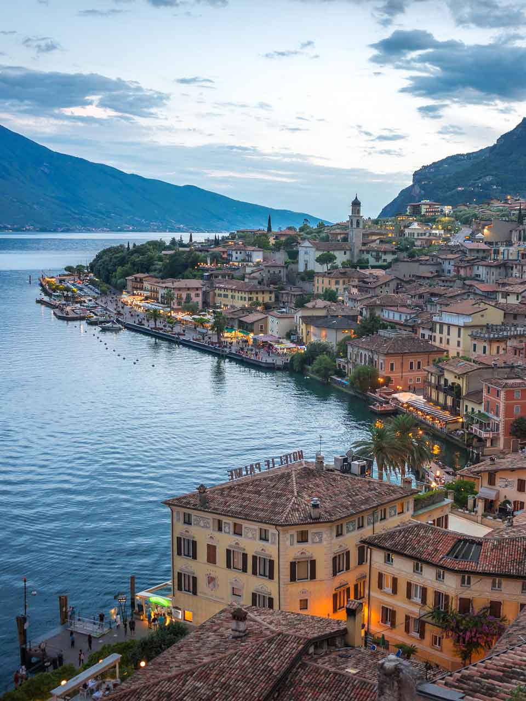

Italy
Feb 18, 2022
With a history spanning more than 3,000 years, Italy has seen times of unification and long separation, intercommunal strife and failed empires. Thankfully at peace for more than half a century now, Italy’s inhabitants are able to enjoy a high standard of living and a thoroughly developed culture. For those who wish to experience some of this culture for themselves, there’s very little that a trip to Italy can’t offer. Italy is a country of 20 provinces, each of them unique, offering their own distinct culinary, architectural, art, history, fashion, sightseeing, and cultural scenes. This guide will give you all the information you need to take on a new adventure through the Italian Peninsula.
- Guick Overview -
Rome was founded in 753 BC by the twins Romulus and Remus. The Roman Empire was founded in 27 BC and Augustus Caesar proclaimed himself emperor of Rome in 31 BC. After the Roman Empire broke down in 395 AD, there were many separate kingdoms and city states. Italy became one nation only in 1861. Since then the country also includes the islands of Sicily and Sardegna. The 'Kingdom of Italy' lasted from 1861 until 1946. During the Second World War, Italy's Prime Minister Benito Mussolini sided with the German Nazi regime. The Italian Republic was formed in 1946.
- Official Name: Italian Republic
- Capital: Rome
- Population: 66 Million
- Offical Language: Italian
- Currency: Euro
- Climate: Maritime
- Timezone: UTC +1
- When to visit -
Summer is generally the busiest time of year to visit. It's a good idea to book your accommodations well in advance as they will probably sell out quickly. Expect hot weather into the 90s (F). My advice for visiting during this time of year is to avoid the crowds by venturing into smaller, lesser-known villages and avoiding big tourist hot-spots like Rome, Venice, and Florence.
Except for Carnival in Venice, which takes place around February each year, winter is a good time to visit if you want to avoid crowds and don't mind the cooler weather. This season is also a good time for getting cheaper air travel and hotel deals. The best part is that you can enjoy all the hot spots without a ton of tourists. You’ll also be in time for all the Christmas Markets.
- Where to go -
Florence
Florence has it all from world famous museums to glorious architecture. It's the city known for the Duomo, Piazza della Signoria, and Ponte Vecchio, and also home to incomparable art collections. I suggest booking a private tour of the Uffizi to see one of the best. An easy walk from the Uffizi and Ponte Vecchio, NH Collection Firenze Porta Rossa is a good central choice for sightseeing. But if you want to wake up to views of the Arno River choose a riverside room at Pontevecchio Relais in the heart of Florence.
San Gimignano
Tuscany is famous for hill towns but few are quite as stunning as San Gimignano. Here, a dramatic skyline of medieval towers gazes out over gorgeous, rolling Tuscan countryside. Book a tour of San Gimignano from Florence to discover the town's historic centre with its winding backstreets and honey coloured buildings, frescoed churches and grand gothic palazzi. Stay at romantic 11th century Leon Bianco on Piazza della Cisterna in the heart of San Gimignano, or enjoy the countryside at Hotel Casolare Le Terre Rosse on the ancient pilgrim route of Via Francigena just outside San Gimignano.
Lake Garda
Lake Garda is Italy’s largest lake and an quick day trip from Milan. Take a small group cruise to admire Garda's beautiful lakeside towns, encircling mountains, grand waterfront hotels, and luxurious spa resorts. If you want to linger a little on Lake Garda stay at historic Hotel Eden in the heart of Sirmione. Alternatively go all out and indulge yourself at Du Lac et Du Parc Grand Resort in Riva Del Garda.

Positano
Positano is the hillside town on the Amalfi Coast, instantly recognisable for its pastel coloured houses. A closer look reveals quaint streets, designer shops and smart restaurants with amazing views. Delve even deeper into Amalfi on a small group snorkelling tour of the coast. Staying on the Amalfi Coast may be on the more expensive side, so be mindful of your budget. If you want to splash out, luxurious Hotel Villa Franca Positano offers incredible views from the top of the town.
Sorrento
The lovely southern town of Sorrento sits on a clifftop above the Bay of Naples. A vintage seaside resort with a long summer season, it's known for Baroque and Renaissance architecture and truly sensational views. To make the most of the views in Sorrento, think about staying at clifftop Grand Hotel de la Ville. Or opt for absolute luxury on the Bay of Naples and book a few nights at the exceptional Grand Hotel Excelsior Vittoria.
- General advice -
Getting to Italy is pretty straightforward. The largest international airports are Leonardo da Vinci Fiumicino Airport and Milan International Airport. Once you land, the train network will be able to get you to where you want to go quickly and efficiently. Expect to walk a lot if you don't purchase a rental vehicle, so be sure to wear comfortable shoes and dress appropriately for the occasion. If you plan on visiting any churches, shoulders and knees should be covered for both men and women.
Unlike the US, tipping usually isn't expected. In restaurants, a service charge is generally included with the bill, but if it’s not already included, it's common to round up the bill (pay 35 euros for a 32 euro meal, for example). You'll have to ask for the bill yourself, since it's considered rude for a waiter to hand you the bill while you're still eating. Tipping in taxis and services is also optional, but most people round up to the nearest euro. This is pretty much the same for the rest of Europe.
Credit and debit cards are widely accepted in Italy but make sure that your card has no international fees. For cash, ATMs are situated in all cities and towns across Italy but be aware of transaction fees.
- Common phrases -
| English |
Italian |
Pronounciation |
| Hello |
Ciao |
Chow |
| Thank you |
Grazie |
Graz-ee |
| Goodbye |
Arrivederci |
Aree-ved-erchee |
| Please |
Per favore |
Pair fav-aw-ray |
| Your welcome |
Prego |
Pray-go |
| Good morning |
Buongiorno |
Bwon jaw-no |
- Send a message -